هشت پرسش تمرین تئوری سوم دربارهٔ فضای ضرب داخلی، تعامد، متمم متعامد، گرام–اشمیت و کوشی–شوارتز. صورت سؤال و پاسخ تشریحی قابل مطالعه است؛ تصویر برگهٔ اصلی نیز برای حفظ متن ارسالی کنار هر بخش قرار دارد. برای دیدن جواب، «نمایش پاسخ تشریحی» را باز کن.
پرسش ۱ — استقلال خطی تحت دو شرط ضرب داخلی
فرض کنید \(\{v_1,\ldots,v_m\}\subset V\) و هر دو شرط زیر برقرار باشند:
- برداری \(u\in V\) وجود دارد به طوری که \(\langle u,v_i\rangle>0\) برای همهٔ \(i\).
- برای هر دو شاخص متمایز \(i\neq j\)، داریم \(\langle v_i,v_j\rangle\leq0\).
نشان دهید \(v_1,\ldots,v_m\) مستقل خطی هستند.
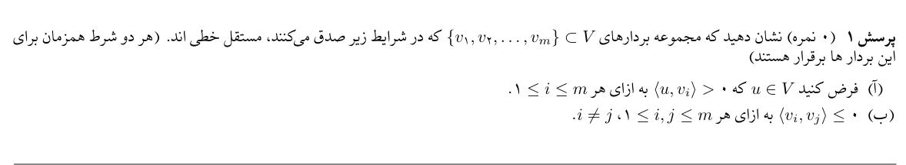
نمایش پاسخ تشریحیپنهان کردن پاسخ
رابطهٔ \(\sum_{i=1}^m c_i v_i=0\) را با ضرایب حقیقی در نظر میگیریم. فرض میکنیم ضریبی ناصفر باشد و در صورت نیاز علامت همهٔ ضرایب را عوض میکنیم تا دستکم یک ضریب مثبت شود. بگذارید
\[P=\{i:c_i>0\},\qquad N=\{j:c_j<0\}.\]
با انتقال جملههای منفی به طرف دیگر:
\[w=\sum_{i\in P}c_iv_i=\sum_{j\in N}(-c_j)v_j.\]
پس با استفاده از دو نمایش \(w\) و شرط دوم:
\[0\leq\|w\|^2=\sum_{i\in P}\sum_{j\in N}c_i(-c_j)\langle v_i,v_j\rangle\leq0.\]
بنابراین \(w=0\). ولی شرط اول میدهد:
\[\langle u,w\rangle=\sum_{i\in P}c_i\langle u,v_i\rangle>0,\]
که تناقض است. پس همهٔ ضرایب صفرند و بردارها مستقل خطیاند.
پاسخ طبق پاسخنامهٔ ارسالی؛ تصویر اصل پاسخ در زیر آمده است.
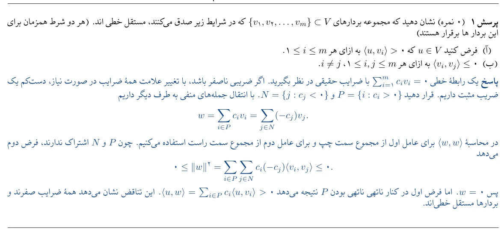
پرسش ۲ — علامت مثبت ضرایب در گرام–اشمیت
فرض کنید \(v_1,\ldots,v_m\) مستقل خطی باشند و بردارهای \(e_k\) با گرام–اشمیت و نرمالسازی ساخته شوند:
\[e_1=\frac{v_1}{\|v_1\|},\qquad e_k=\frac{v_k-\sum_{j=1}^{k-1}\langle v_k,e_j\rangle e_j}{\left\|v_k-\sum_{j=1}^{k-1}\langle v_k,e_j\rangle e_j\right\|}.\]
نشان دهید برای \(k=1,\ldots,m\)، همواره \(\langle v_k,e_k\rangle>0\).
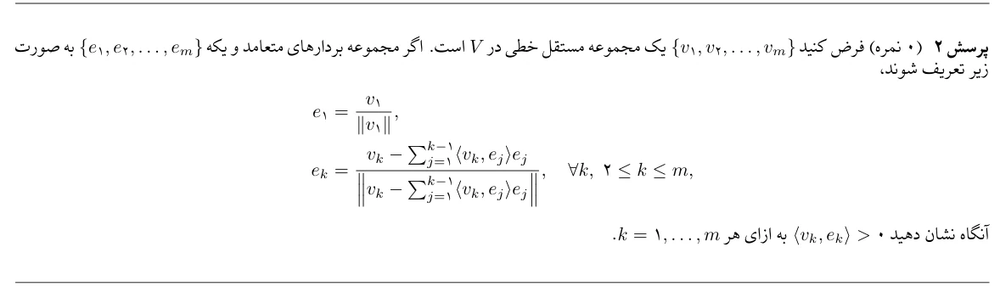
نمایش پاسخ تشریحیپنهان کردن پاسخ
بخش تصویری و باقیماندهٔ هر بردار را تعریف میکنیم:
\[p_k=\sum_{j=1}^{k-1}\langle v_k,e_j\rangle e_j,\qquad r_k=v_k-p_k.\]
به دلیل استقلال خطی بردارهای اولیه، \(r_k\neq0\) و \(e_k=r_k/\|r_k\|\). از سوی دیگر \(p_k\) با \(e_k\) متعامد است. بنابراین:
\[\langle v_k,e_k\rangle=\langle p_k+r_k,e_k\rangle=\frac{\langle r_k,r_k\rangle}{\|r_k\|}=\|r_k\|>0.\]
برای \(k=1\) نیز با \(p_1=0\) همین نتیجه به دست میآید.
پاسخ طبق پاسخنامهٔ ارسالی؛ تصویر اصل پاسخ در زیر آمده است.
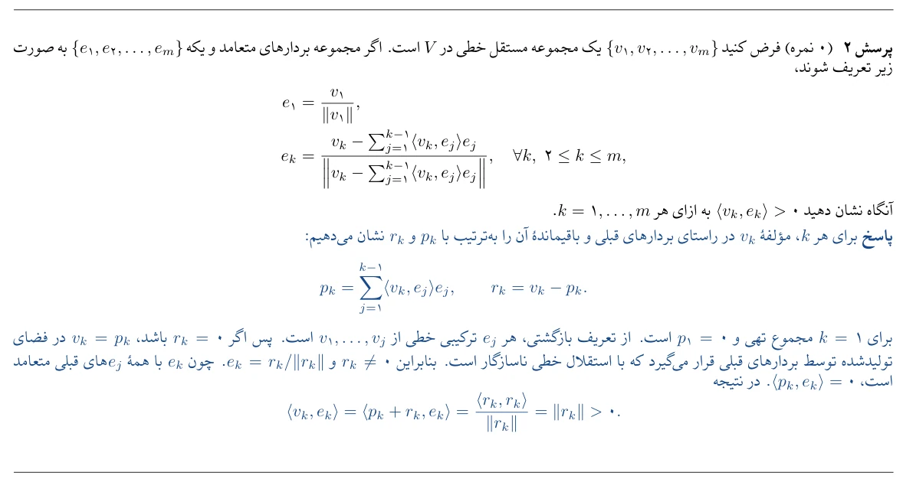
پرسش ۳ — تعامد جمع و تفاضل دو بردار
در یک فضای ضرب داخلی حقیقی \(V\)، برای \(x,y\in V\) نشان دهید:
\[x+y\perp x-y\quad\Longleftrightarrow\quad\|x\|=\|y\|.\]
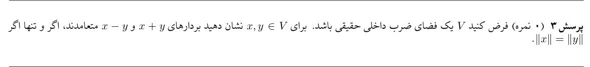
نمایش پاسخ تشریحیپنهان کردن پاسخ
با استفاده از خطی بودن و تقارن ضرب داخلی حقیقی:
\[\begin{aligned}\langle x+y,x-y\rangle&=\langle x,x\rangle-\langle x,y\rangle+\langle y,x\rangle-\langle y,y\rangle\&=\|x\|^2-\|y\|^2.\end{aligned}\]
دو بردار دقیقاً زمانی متعامدند که این مقدار صفر باشد؛ چون نرمها نامنفیاند، تساوی مربع نرمها معادل تساوی نرمهاست.
پاسخ طبق پاسخنامهٔ ارسالی؛ تصویر اصل پاسخ در زیر آمده است.
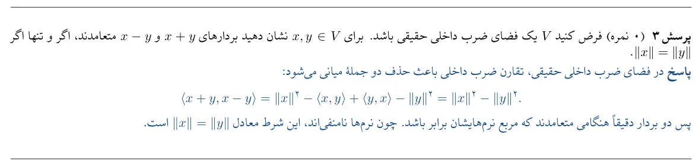
پرسش ۴ — حالت برابری بسل و عضویت در پوش خطی
فرض کنید \(e_1,\ldots,e_m\) مجموعهای متعامد یکه در فضای ضرب داخلی متناهیبعدی \(V\) باشد و \(v\in V\). ثابت کنید:
\[\|v\|^2=\sum_{i=1}^{m}|\langle v,e_i\rangle|^2\quad\Longleftrightarrow\quad v\in\operatorname{span}(e_1,\ldots,e_m).\]
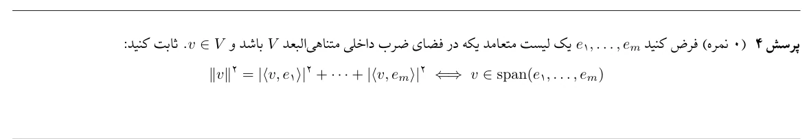
نمایش پاسخ تشریحیپنهان کردن پاسخ
بردار باقیمانده را تعریف میکنیم:
\[w=v-\sum_{k=1}^m\langle v,e_k\rangle e_k.\]
به علت متعامد یکه بودن بردارهای \(e_i\)، برای هر \(j\)، \(\langle w,e_j\rangle=0\). در نتیجه تجزیهٔ بالا متعامد است و فیثاغورس میدهد:
\[\|v\|^2=\|w\|^2+\sum_{k=1}^m|\langle v,e_k\rangle|^2.\]
اگر تساوی مسئله برقرار باشد، \(\|w\|=0\) و لذا \(w=0\)؛ پس \(v\) ترکیبی خطی از \(e_i\)هاست. برعکس، اگر \(v\) در پوش خطی آنها باشد، با ضرب داخلی از \(e_j\) ضریب مربوطه به دست میآید و \(w=0\) میشود؛ بنابراین تساوی برقرار است.
پاسخ طبق پاسخنامهٔ ارسالی؛ تصویر اصل پاسخ در زیر آمده است.
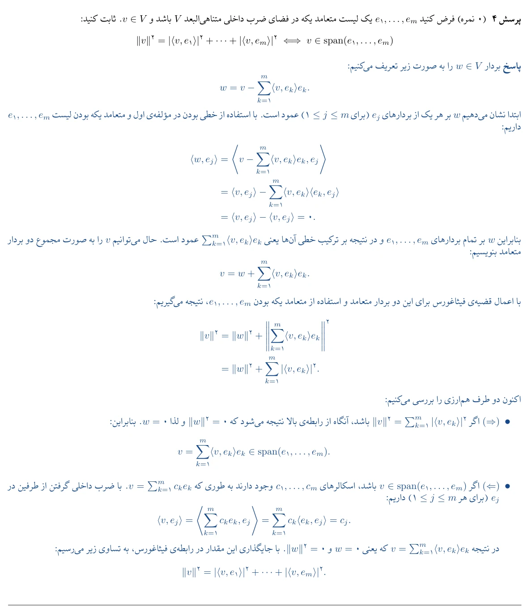
پرسش ۵ — متمم متعامد و پایهٔ متعامد یکه در \(\mathbb{R}^3\)
در \(\mathbb R^3\) با ضرب داخلی استاندارد، بگذارید:
\[U=\operatorname{span}\{(1,1,0)\},\qquad W=\operatorname{span}\{(1,-1,0)\}.\]
(آ) \(U^\perp\) و یک پایه برای آن را پیدا کنید.
(ب) نشان دهید \(U\) و \(W\) متعامدند. آیا \(W=U^\perp\) است؟ یک مثال نقض بدهید.
(ج) برای \(U^\perp\) یک پایهٔ متعامد انتخاب کرده و سپس آن را نرمال کنید.
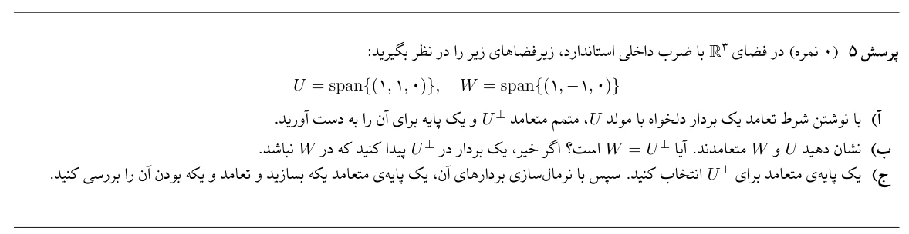
نمایش پاسخ تشریحیپنهان کردن پاسخ
(آ) اگر \(z=(a,b,c)\)، شرط تعامد با \((1,1,0)\) چنین است:
\[a+b=0\quad\Longrightarrow\quad U^\perp=\{(a,-a,c):a,c\in\mathbb R\}=\operatorname{span}\{(1,-1,0),(0,0,1)\}.\]
(ب) چون \((1,1,0)\cdot(1,-1,0)=0\)، دو زیرفضا متعامدند. ولی \((0,0,1)\in U^\perp\) و \((0,0,1)\notin W\)، پس \(W\neq U^\perp\).
(ج) دو بردار بالا متعامدند؛ با نرمالسازی به پایهٔ متعامد یکهٔ زیر میرسیم:
\[q_1=\frac{(1,-1,0)}{\sqrt2},\qquad q_2=(0,0,1).\]
ضرب داخلی آنها صفر و نرم هر دو یک است.
پاسخ طبق پاسخنامهٔ ارسالی؛ تصویر اصل پاسخ در زیر آمده است.
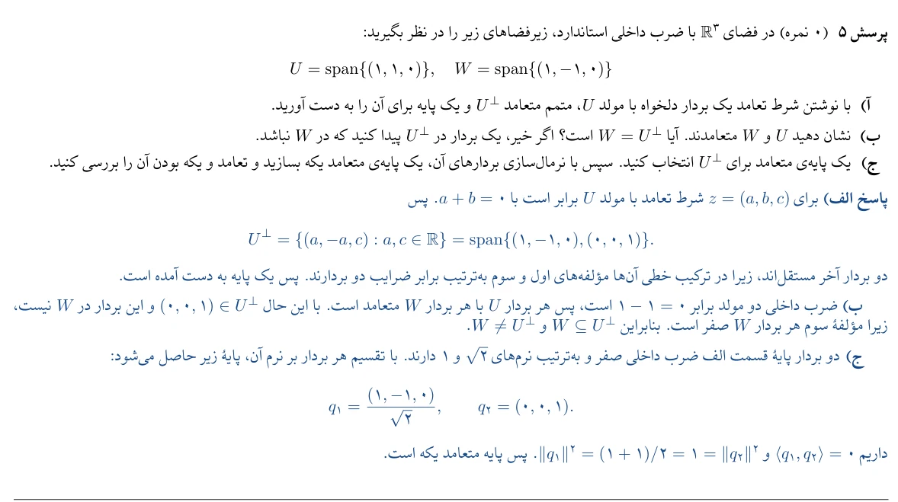
پرسش ۶ — متمم متعامد توابع فرد
فضای \(V=C([-1,1],\mathbb R)\) را با ضرب داخلی
\[\langle f,g\rangle=\int_{-1}^{1}f(t)g(t)\,dt\]
در نظر بگیرید. اگر \(W\) زیرفضای توابع فرد، یعنی \(f(-t)=-f(t)\)، باشد، \(W^\perp\) را پیدا کنید.
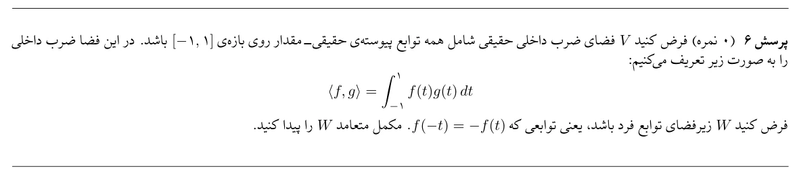
نمایش پاسخ تشریحیپنهان کردن پاسخ
هر تابع زوج \(g\) بر هر تابع فرد \(f\) متعامد است؛ زیرا \(fg\) فرد و انتگرالش روی بازهٔ متقارن صفر میشود. پس توابع زوج در \(W^\perp\) قرار میگیرند.
برای جهت عکس، اگر \(g\in W^\perp\)، آن را به قسمت زوج و فرد تجزیه میکنیم:
\[g_e(t)=\frac{g(t)+g(-t)}2,\qquad g_o(t)=\frac{g(t)-g(-t)}2,\qquad g=g_e+g_o.\]
از آنجا که \(g_o\in W\)، ضرب داخلی \(g\) با \(g_o\) صفر است. همچنین \(\langle g_e,g_o\rangle=0\). پس:
\[0=\langle g,g_o\rangle=\langle g_o,g_o\rangle=\int_{-1}^{1}g_o(t)^2\,dt.\]
بنابراین \(g_o=0\) و \(g\) زوج است. نتیجه:
\[\boxed{W^\perp=\{g\in C([-1,1],\mathbb R):g(-t)=g(t)\}.}\]
پاسخ طبق پاسخنامهٔ ارسالی؛ تصویر اصل پاسخ در زیر آمده است.
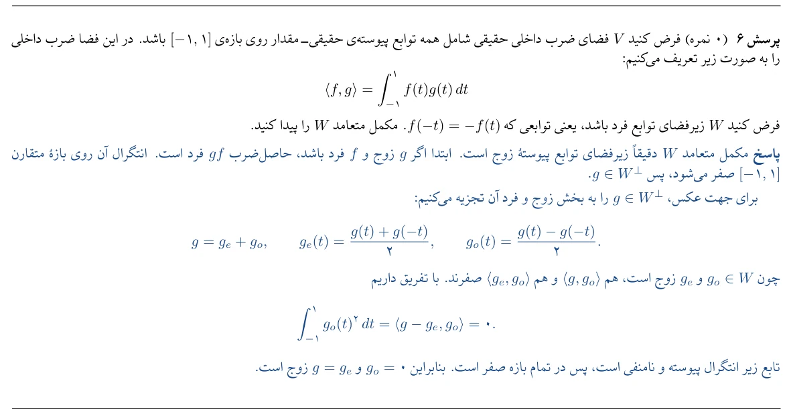
پرسش ۷ — گرام–اشمیت و تکمیل پایه در \(\mathbb{R}^3\)
در \(\mathbb R^3\)، بردارهای زیر داده شدهاند:
\[a_1=(1,1,0),\qquad a_2=(1,0,1),\qquad a_3=(3,5,-2).\]
(آ) فرایند گرام–اشمیت را روی \(a_1,a_2\) اجرا و پایهٔ متعامد یکهٔ \(\{q_1,q_2\}\) برای \(S=\operatorname{span}\{a_1,a_2\}\) پیدا کنید.
(ب) بردار یکهٔ \(q_3\in S^\perp\) را بیابید تا \(\{q_1,q_2,q_3\}\) پایهٔ متعامد یکهٔ \(\mathbb R^3\) باشد.
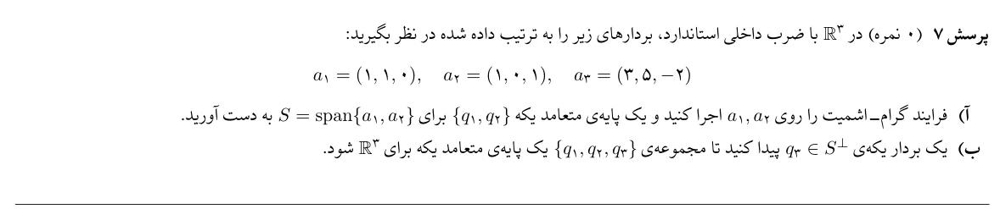
نمایش پاسخ تشریحیپنهان کردن پاسخ
(آ) نخست:
\[q_1=\frac{a_1}{\|a_1\|}=\frac{(1,1,0)}{\sqrt2}.\]
باقیماندهٔ بردار دوم پس از حذف تصویر روی اولی:
\[r_2=a_2-\frac{\langle a_2,a_1\rangle}{\langle a_1,a_1\rangle}a_1=(1,0,1)-\tfrac12(1,1,0)=\tfrac12(1,-1,2).\]
با نرمالسازی:
\[q_2=\frac{(1,-1,2)}{\sqrt6}.\]
(ب) اگر \((x,y,z)\in S^\perp\)، باید \(x+y=0\) و \(x+z=0\). با انتخاب \(x=1\) و نرمالسازی:
\[\boxed{q_3=\frac{(1,-1,-1)}{\sqrt3}.}\]
این سه بردار متعامد و یکهاند و بنابراین پایهٔ \(\mathbb R^3\) هستند. همچنین \(a_3=5a_1-2a_2\) است؛ پس گرام–اشمیت روی سه بردار اولیه در گام سوم باقیماندهٔ صفر خواهد داشت.
پاسخ طبق پاسخنامهٔ ارسالی؛ تصویر اصل پاسخ در زیر آمده است.
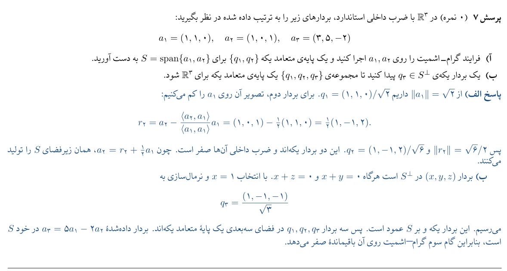
پرسش ۸ — دو کاربرد نامساوی کوشی–شوارتز
با استفاده از کوشی–شوارتز، نشان دهید:
(آ) برای \(A\in\mathbb R^{n\times n}\)، با ضرب داخلی ماتریسی \(\langle X,Y\rangle=\operatorname{tr}(X^TY)\):
\[(\operatorname{tr}A)^2\leq n\operatorname{tr}(A^TA).\]
(ب) برای هر تابع حقیقی پیوسته \(f\in C[0,1]\):
\[\left(\int_0^1xf(x)\,dx\right)^2\leq\frac13\int_0^1f(x)^2\,dx.\]
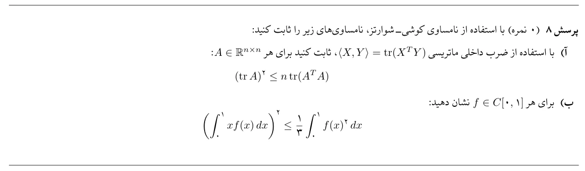
نمایش پاسخ تشریحیپنهان کردن پاسخ
(آ) ماتریس همانی \(I_n\) را بهعنوان یکی از دو ورودی در نظر میگیریم:
\[\langle I_n,A\rangle=\operatorname{tr}(A),\quad\langle I_n,I_n\rangle=n,\quad\langle A,A\rangle=\operatorname{tr}(A^TA).\]
بنابراین از کوشی–شوارتز:
\[(\operatorname{tr}A)^2=|\langle I_n,A\rangle|^2\leq n\operatorname{tr}(A^TA).\]
(ب) در فضای توابع پیوسته با ضرب داخلی انتگرالی روی \([0,1]\)، دو تابع \(g(x)=x\) و \(f(x)\) را انتخاب میکنیم. چون
\[\langle g,g\rangle=\int_0^1x^2\,dx=\frac13,\]
نامساوی کوشی–شوارتز میدهد:
\[\left(\int_0^1xf(x)\,dx\right)^2\leq\left(\int_0^1x^2\,dx\right)\left(\int_0^1f(x)^2\,dx\right)=\frac13\int_0^1f(x)^2\,dx.\]
پاسخ طبق پاسخنامهٔ ارسالی؛ تصویر اصل پاسخ در زیر آمده است.
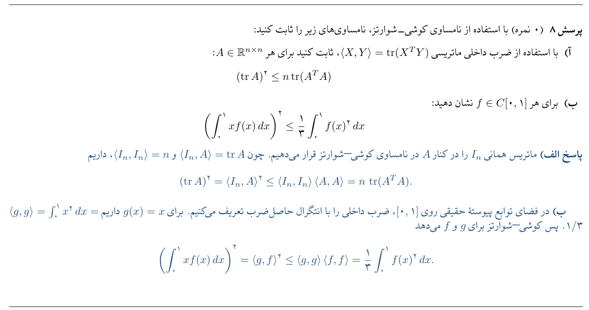